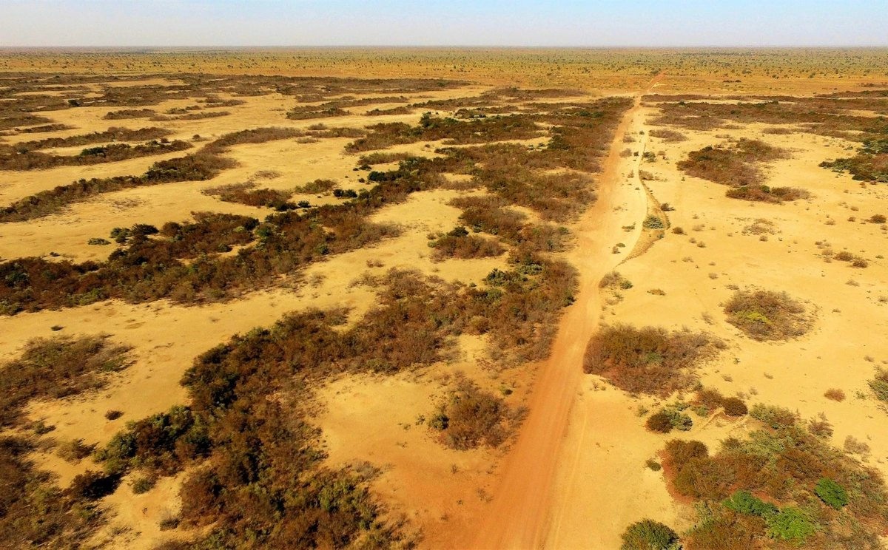

Drylands cover about 40% of Earth's land surface and are home to roughly 35% of the world's population, often in developing countries where the economy and human well-being depend strongly on ecosystem services. They are also among the ecosystems most vulnerable to climate change, with aridity thresholds beyond which they collapse into desert. Dryland vegetation often self-organizes into regular spatial patterns such as rings, spots, and stripes, and these patterns are widely read as indicators of how close a system sits to its threshold (Martinez-Garcia et al., 2023).
The prevailing hypothesis holds that aggregation raises the threshold, because vegetated patches concentrate runoff and soil moisture. Our recent work shows the opposite can happen. Where topography drives water downslope, plant interactions become asymmetric and lower the threshold instead (Pinto-Ramos & Martinez-Garcia, 2026). The same pattern can therefore signal robustness or fragility, depending on the interactions that produce it and on how the landscape redistributes water.
Telling those two cases apart requires a description that starts from the individual plant. We have developed a bottom-up approach combining mathematical modeling, greenhouse experiments, and analysis of field and satellite data to describe vegetation dynamics in drylands (Cabal et al., 2020), working from individual plants to whole ecosystems. At the individual level, our work revealed the mechanisms driving below-ground plant competition and how plant–soil feedback supports facilitation across stress gradients (Cabal et al., 2020; Cabal, Maciel & Martinez-Garcia, 2024), resolving a long-standing debate about the drivers of below-ground plant interactions (see this outreach movie). At the ecosystem level, we combined satellite imagery from Sudan with remotely sensed vegetation biomass and precipitation time series to test how vegetation patterns anticipate impending desertification dynamics (Veldhuis et al., 2022).
